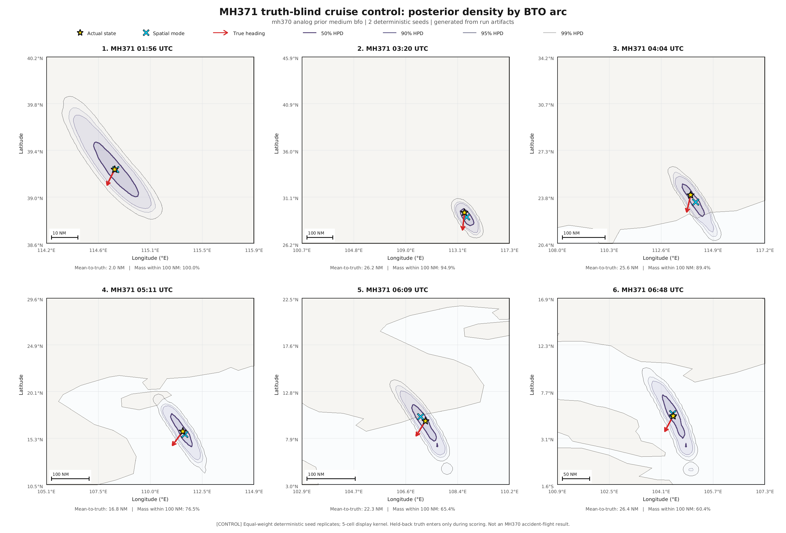
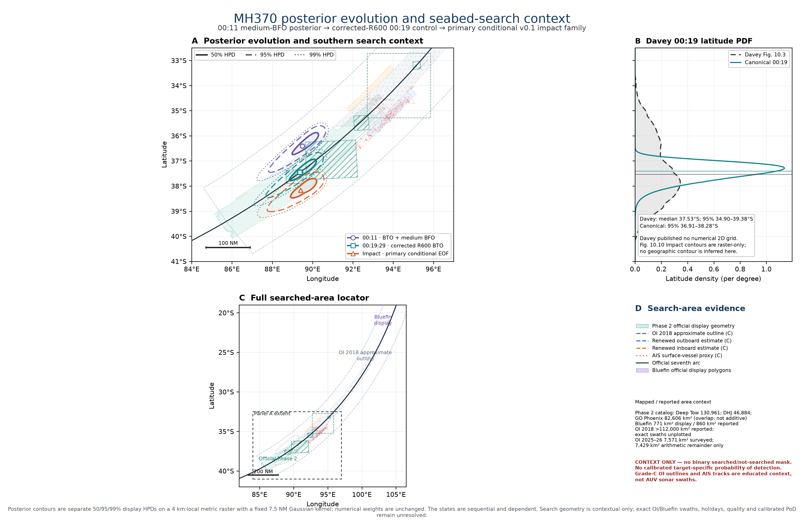
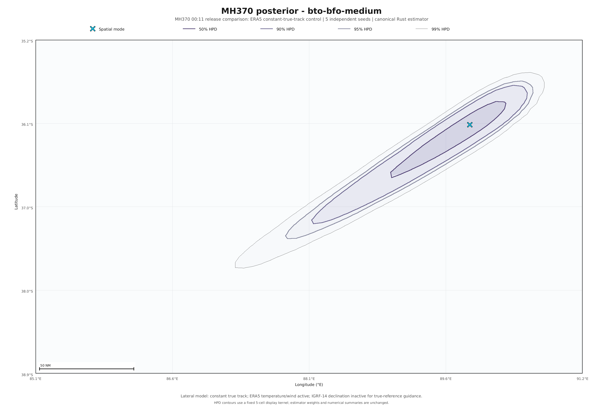
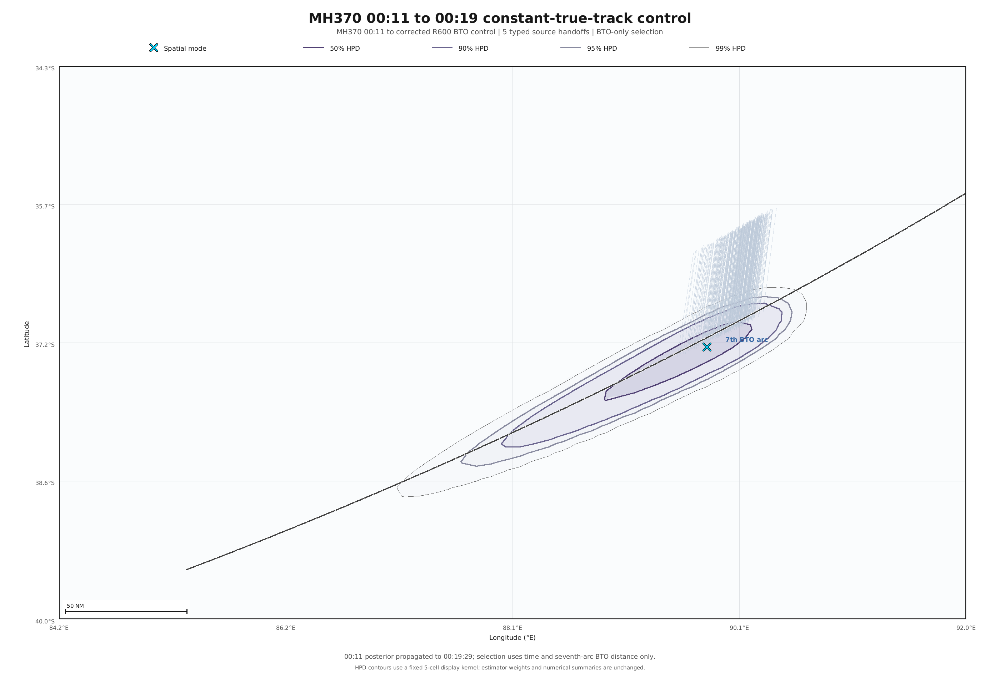

Frozen assessment and reproduction capsule
MH370 Bayesian estimator · v0.1
Central SATCOM inference, corrected-R600 seventh arc, explicit conditional end-of-flight families, known-flight control, Davey comparison, and searched-area context.
Requested views

MH371 v0.1 control and arcs
Fresh truth-separated medium-BFO control, produced by the exact v0.1 binary.


Full v0.1 overview
00:11, corrected-R600 seventh arc, conditional impact, Davey latitude PDF, and searched-area context.


Canonical MH370 00:11 family
BTO plus medium-BFO, five seeds. Separate BTO-only and conditional-gain reports are retained.

Corrected-R600 seventh arc
Typed continuation from the canonical 00:11 medium-BFO posterior.


Davey
Independent latitude-density comparison and the retained 2016 source paper.

Searched areas
Evidence atlas with source classification. Context only; incomplete geometry cannot support exclusion.

Baseline planning sensitivity
Twelve provisional 625 km² tiles; not operational guidance or a negative-search posterior.